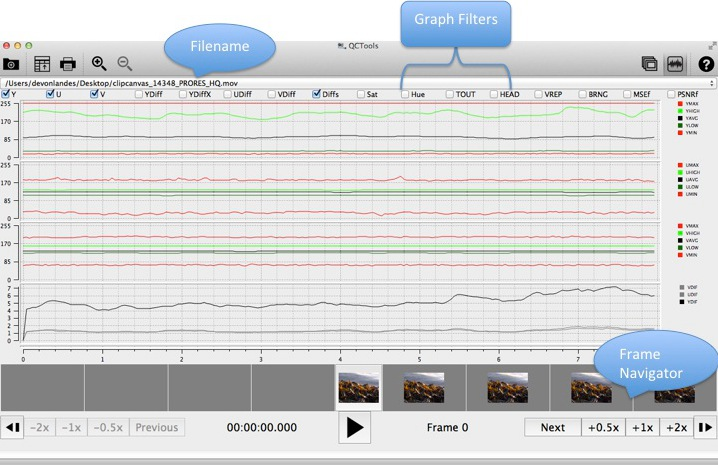
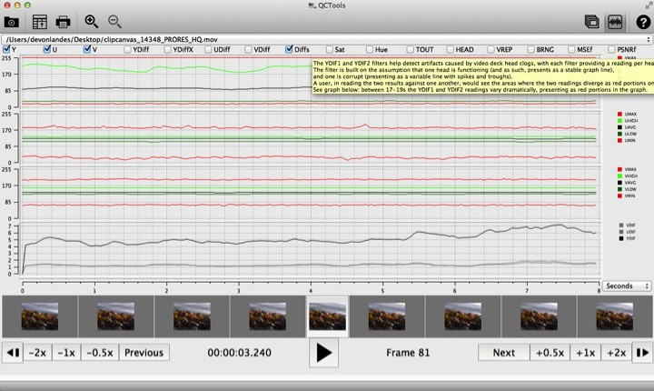
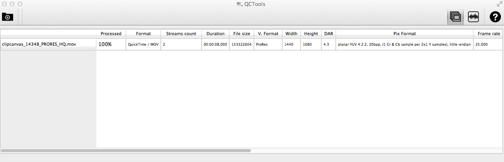
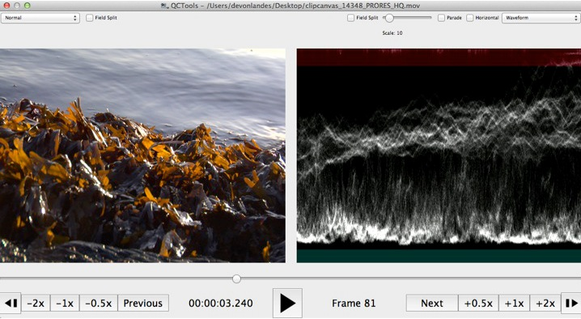
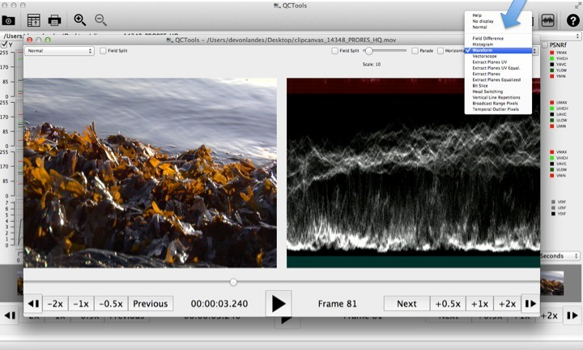

Go to http://bavc.org/qctools and download QCTools for your operating system (currently Windows, Mac OS X, and many Linux-based operating systems are supported). Initiate the install by double-clicking the icon, and follow the steps. New releases of QCTools will be periodically available at BAVC's QCTools project website as well as the releases tab on the QCTools github page.
QCTools provides a Preferences window to configure settings for running QCTools.
QCTool's analysis methods depend on filters from FFmpeg's libavfilter library. Currently this includes: signalstats (initially created as part the QCTools project), cropdetect, PSNR, astats, and EBU R.128.
| filter name | track type | application in QCTools |
|---|---|---|
| signalstats | video | The signalstats analysis filter generates data to plot statistics on video signal levels, frame-to-frame differences, saturation and hue averages, and quantifications of visual patterns and errors. It is highly recommended to enable this fitler. |
| cropdetect | video | The cropdetect filter is used to determine how many columns and rows of nearly-black pixels border the visual image of the frame. The filter can detect changes in framing, letterboxing, pillarboxing, and adjustments to the aperature of the image. |
| PSNR | video | The PSNR filter is used in QCTools specifically to generate a comparison between the two fields of the frame. The resulting data documents how different the fields are (which can find head-clogs or other videotape playback errors). |
| SSIM | video | The SSIM filter is used in QCTools specifically to generate a comparison between the two fields of the frame. The resulting data documents how different the fields are (which can find head-clogs or other videotape playback errors). It is similar to PSNR but usually a different visual comparison algorithm. |
| astats | audio | The astats filter compiles statistics on audio data for small units of time, including maximum and minimum audio levels, DC Offset, the amount of consecutive audio sample differences, and RMS data. |
| EBU R.128 | audio | The EBU R.128 filter provides data on the perceived loudness of audio volume. |
Enabling all filters naturally provides more data, but results in a slower analysis and large files. The EBU R.128 values represent perceived volume whereas the astats filters include metrics on actual volume (so the use of EBU R128 may not be considered essential if astats is in use).
The 'Tracks' Preference pane allows the user to set if they would like to analyze only the first track or all tracks of video and audio. Setting QCTools to analyze only the first track will result in a faster analyze but the other tracks would be ignored.
QCTools can currently accomodate several video file types including QuickTime, MXF, AVI, Matroska, MP4, and many other audiovisual file formats. Once the QCTools application is open you may identify selected video files for QCTools analysis in three ways:
As files are opened QCTools will begin immediately processing them. This involves creating thumbnails, decoding audiovisual data, and analyzing that data through FFmpeg's signalstats filter.
By clicking the graph checkboxes you can select particular audiovisual metrics that you wish to analyze and display. You may make these selections before uploading your video or at any time after the QCTools analysis has been done and the graph display will update dynamically. As a default, 'Y values', 'U values', 'V values', 'Diffs', and 'Sat' (saturation) are selected. To begin, you may also want to select the Temporal Outliers (tout) Graph Filter. This will detect any large discrepancies between pixels and can provide an initial, high-level overview of potential errors.
For descriptions of each Filter and how to read graph values, please see the Help Section, denoted by the '?' icon in the toolbox portion of the application.
Graphs display on the top portion of the screen, corresponding video thumbnails show below. The video frames may be navigated via the next, previous, or playback buttons; the frame and time for the particular selection will be displayed. Clicking and dragging your cursor over a portion of the graph will cause the thumbnails below to update accordingly. You may also double click a specific thumbnail and the playback window will appear displaying the image and with a variety of analytical playback filters.
Scrubbing your cursor over a particular point on a graph will reveal the corresponding thumbnails in the thumbnail bar along with the frame number and the timestamp of the particular place in the video you have navigated to.
You may also use the '+' and '-' icons in the tool box section of the application to zoom in/out, giving you a more or less detailed view of the graph displays, over a specific timespan of the uploaded video.
You can also 'play' the window within the graph view. When playing the graph's cursor which shows the currently selected frame will scroll to the right while the corresponding thumbnails update in the thumbnail bar below.
Some helpful keyboard shortcuts you may want to use are:
By clicking on a thumbail, you can open the preview window. The preview window serves as a playback environment that allows spot checking and manual video alaysis. The preview window contains two playback windows that can be set to various selections; the filters allow the video to be processed in one of many ways which may help make particular issues more discernable. See the Playback Filters page for more details on these playback filters.
When an analysis (which may be time consuming, depending on the length of the file) is complete the analysis data may then be exported to a compressed XML file for future use. At a later point, the video may be reviewed again simply by opening the XML file--using the Import menu, or dragging and dropping the XML into QCTools--instead of having to reload/ reanalyze the video file itself; this process will take considerably less time. Additionally, this file may be opened in other environments such as standard spreadsheet or database applications.
QCTools also can export analytical metadata per frame in a CSV document but the compressed XML report is recommended since it can be reloaded into QCTools. Please see 'Data Format' tab for more information on the XML file compression and resulting file.
To Export:
Both options will prompt you to name your file and select a select a location.
To Import:
This view displays the filename, graph selections, X-Axis value selector, and the frame navigator buttons.

Descriptions of a graphs are reveals as tooltips when hovering your cursor over the graph checkboxes:

The Table View enables you to view the progress of your file download, plus associated metadata:

In addition to technical metadata about the file (duration, frame rate, file size, etc.) the List View also displays more detailed statistics:
| Column Name | Description |
|---|---|
| Yav | The average of the Y values |
| Yrang | The average of the YHIGH and YLOW values, which indicates the overall range of contrast |
| Uav | The average of the U values |
| Vav | The average of the V values |
| TOUTav | The average of the TOUT values |
| SATb | The number of frames where the maximum saturation is over 88.7, which would indicate levels outside of the broadcast range |
| SATi | The number of frames where the maximum saturation is over 118.2, which would indicate levels outside the legal YUV values |
| BRNGav | The percentage of frames with a BRNG value of more than zero |
| BRNGc | The number of frames with a BRNG value greater than zero |
| MSEfY | The number of frames with an MSEfY value over 1000 |

With the available views:

Many playback filters will use contextual options to tweak them, please review the Playback Filters section of the help documentation for more details.